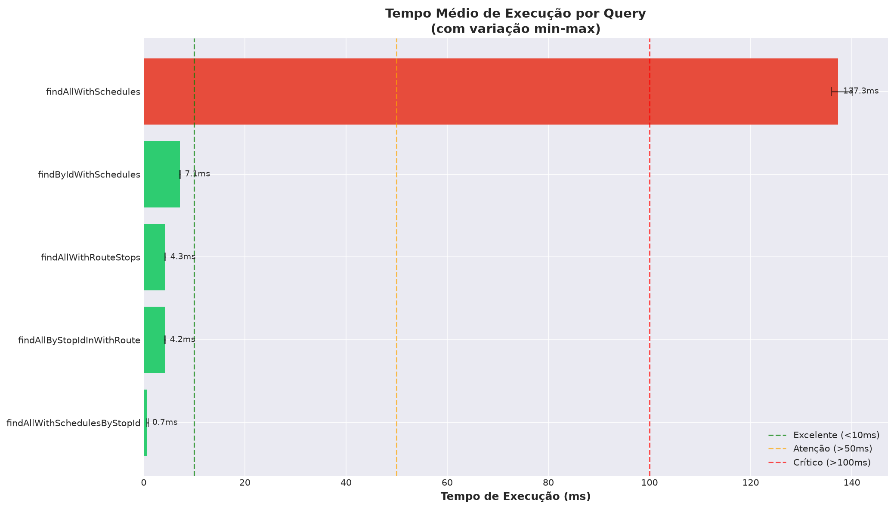
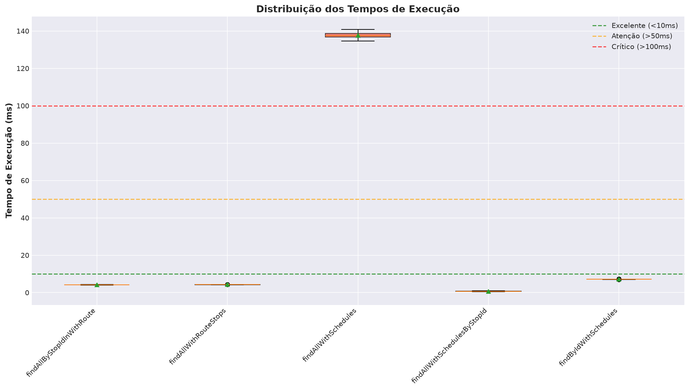
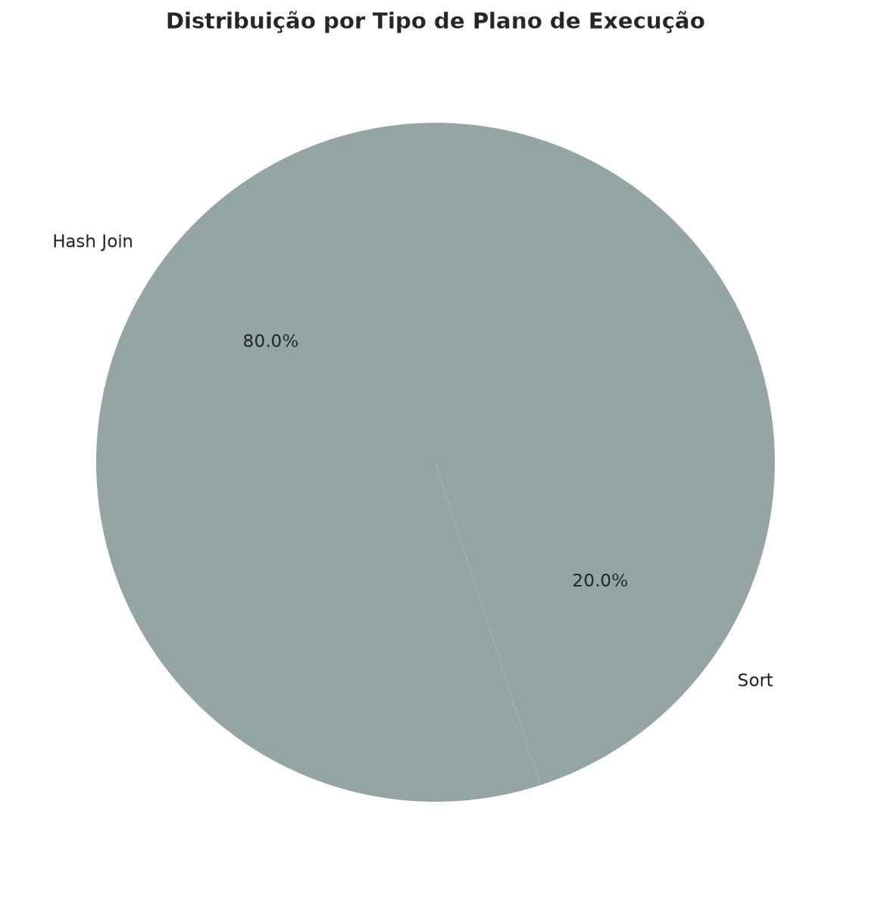
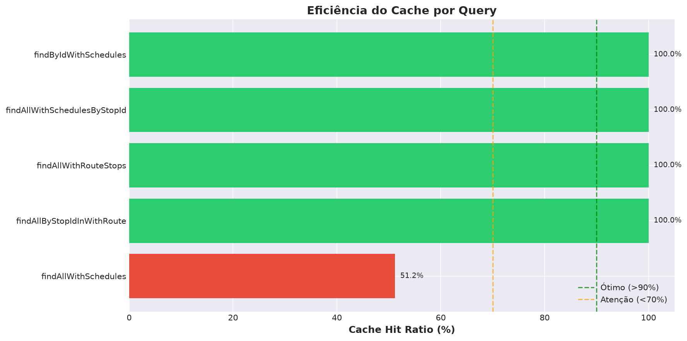
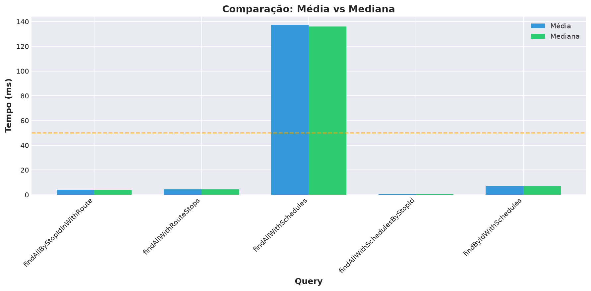
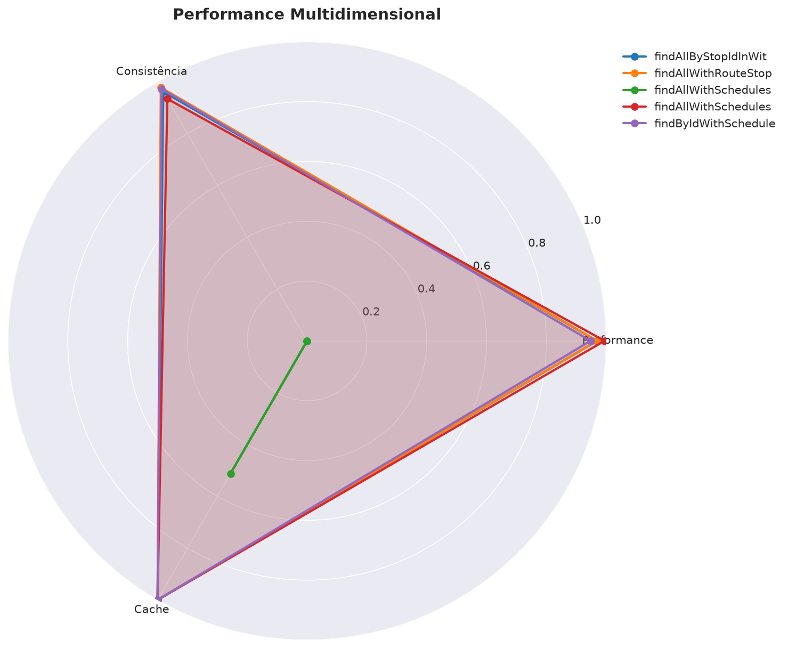
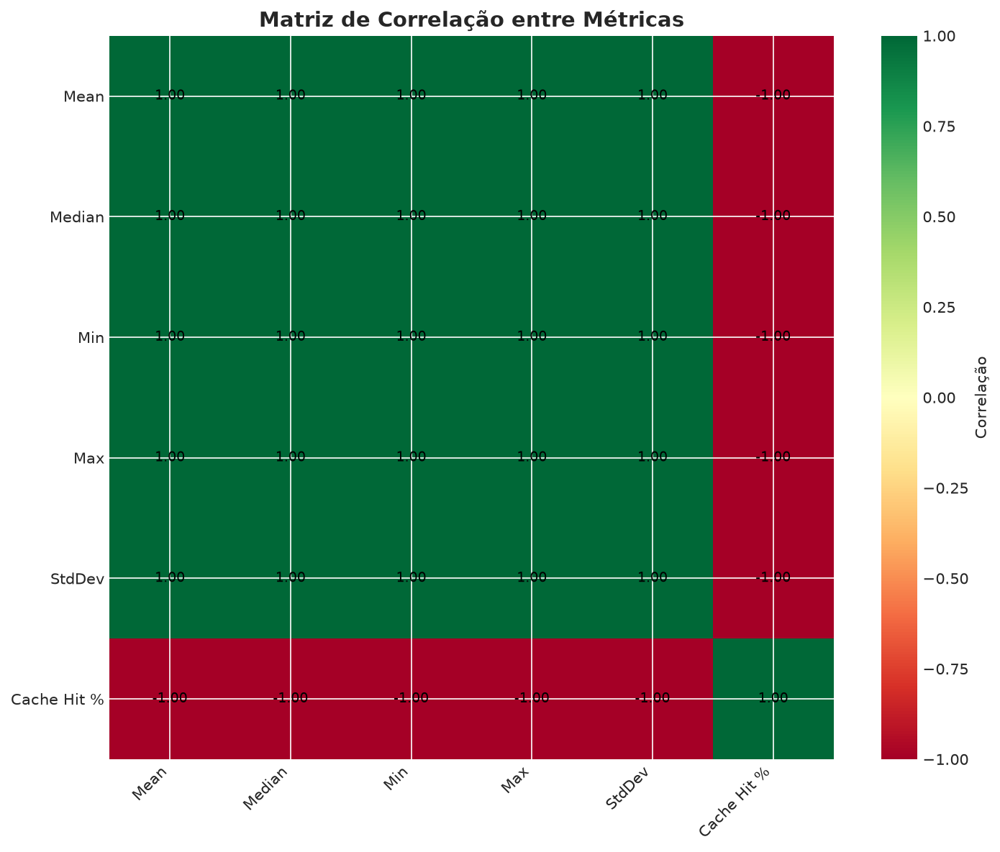
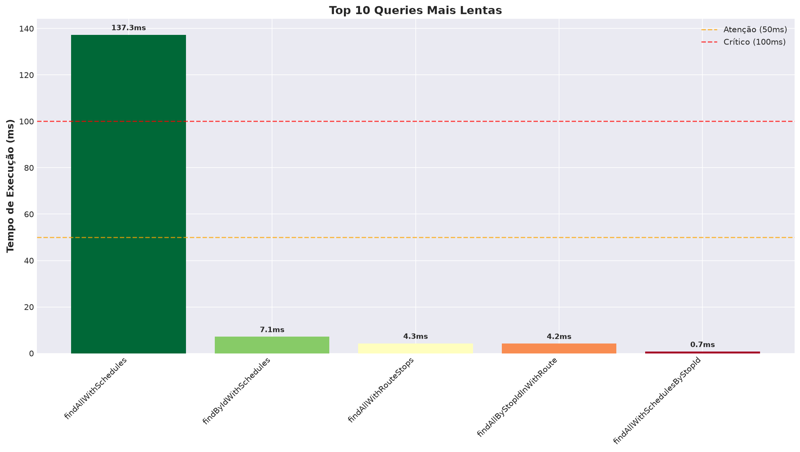

Data de análise: 2026-06-13 22:16:41
Número de queries analisadas: 5








| Query | Média (ms) | Mediana (ms) | Min (ms) | Max (ms) | StdDev | Plan Type | Cache Hit % |
|---|---|---|---|---|---|---|---|
| findAllByStopIdInWithRoute | 4.18 | 4.17 | 4.11 | 4.28 | 0.07 | Hash Join | 100.0% |
| findAllWithRouteStops | 4.26 | 4.28 | 4.20 | 4.29 | 0.04 | Sort | 100.0% |
| findAllWithSchedules | 137.28 | 136.13 | 135.97 | 140.10 | 1.83 | Hash Join | 51.2% |
| findAllWithSchedulesByStopId | 0.70 | 0.66 | 0.62 | 0.91 | 0.12 | Hash Join | 100.0% |
| findByIdWithSchedules | 7.13 | 7.11 | 7.10 | 7.22 | 0.05 | Hash Join | 100.0% |